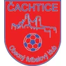

Posledný zápasU13 · IV. liga mladších žiakov U13, 9. kolo
 FK Bradlan Brezová pod Bradlom (domáci)
FK Bradlan Brezová pod Bradlom (domáci)Výsledok 1:1
 Podolie U13 (hostia)
Podolie U13 (hostia)· Štadión ŠVS Bradlan Brezová pod Bradlom · remíza
Návrh webu · nie je to oficiálna stránka klubu
IV. liga mladších žiakov U13 · 3. miesto z 8 · tréner Tomáš Mladý
Posledný zápasU13 · IV. liga mladších žiakov U13, 9. kolo
FK Bradlan Brezová pod Bradlom (domáci)Výsledok 1:1
Podolie U13 (hostia)· Štadión ŠVS Bradlan Brezová pod Bradlom · remíza
5–1–2výhry, remízy, prehry · skóre 34:10
IV. liga mladších žiakov U13
| # | Tím | Z | V | R | P | Skóre | B |
|---|---|---|---|---|---|---|---|
| 1 | 9 | 7 | 0 | 2 | 24:11 | 21 | |
| 2 | 9 | 6 | 0 | 3 | 35:19 | 18 | |
| 3 | 9 | 5 | 1 | 3 | 34:13 | 16 | |
| 4 | 9 | 5 | 1 | 3 | 42:18 | 16 | |
| 5 | 9 | 4 | 2 | 3 | 17:13 | 14 | |
| 6 |  OFK Čachtice | 9 | 3 | 0 | 6 | 22:37 | 9 |
| 7 | 9 | 1 | 0 | 8 | 10:33 | 3 | |
| 8 | 9 | 0 | 0 | 9 | 7:65 | 0 |
Hráči, ktorí v roku 2026 nastúpili alebo boli v nominácii (Sportnet). Pri mládeži len mená.